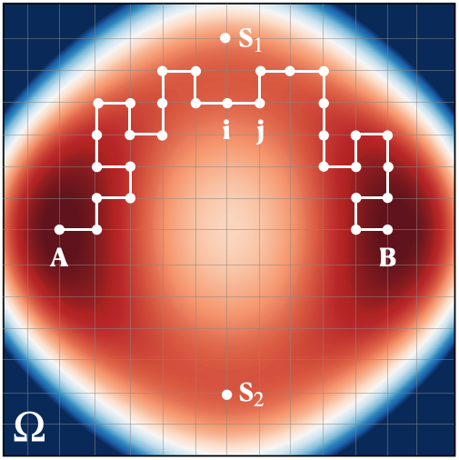
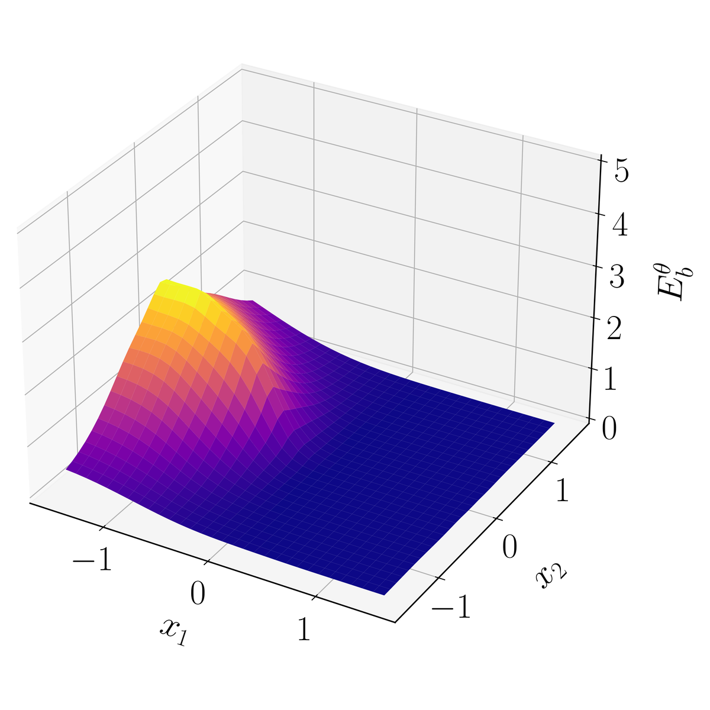
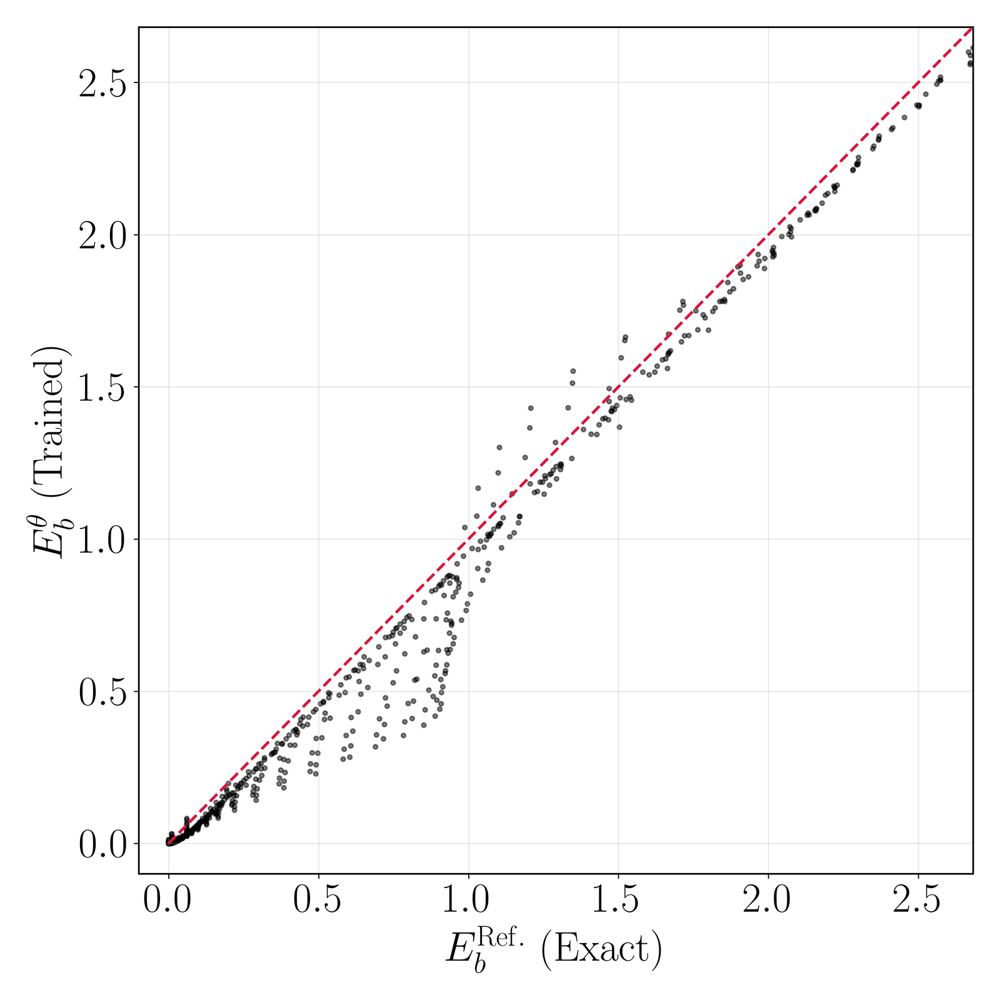
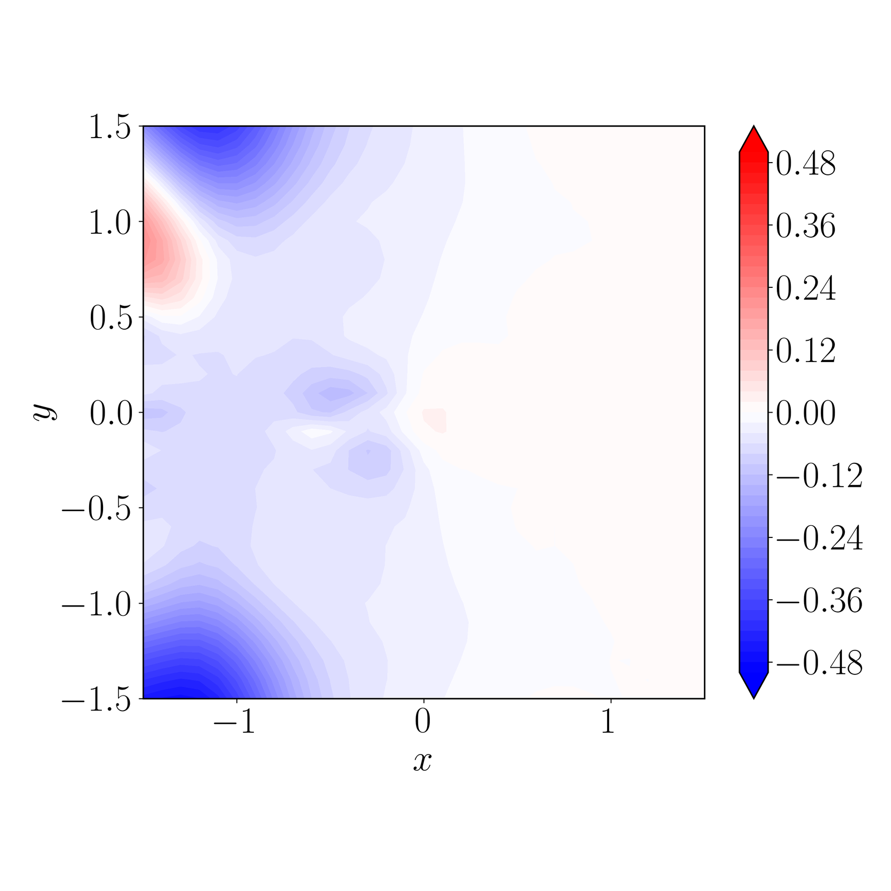
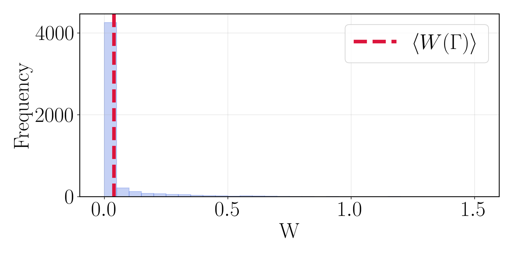
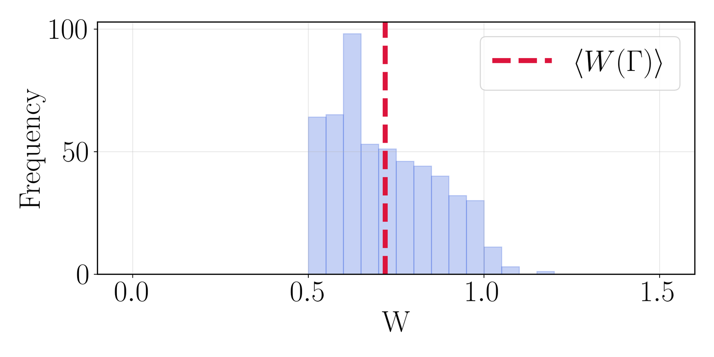
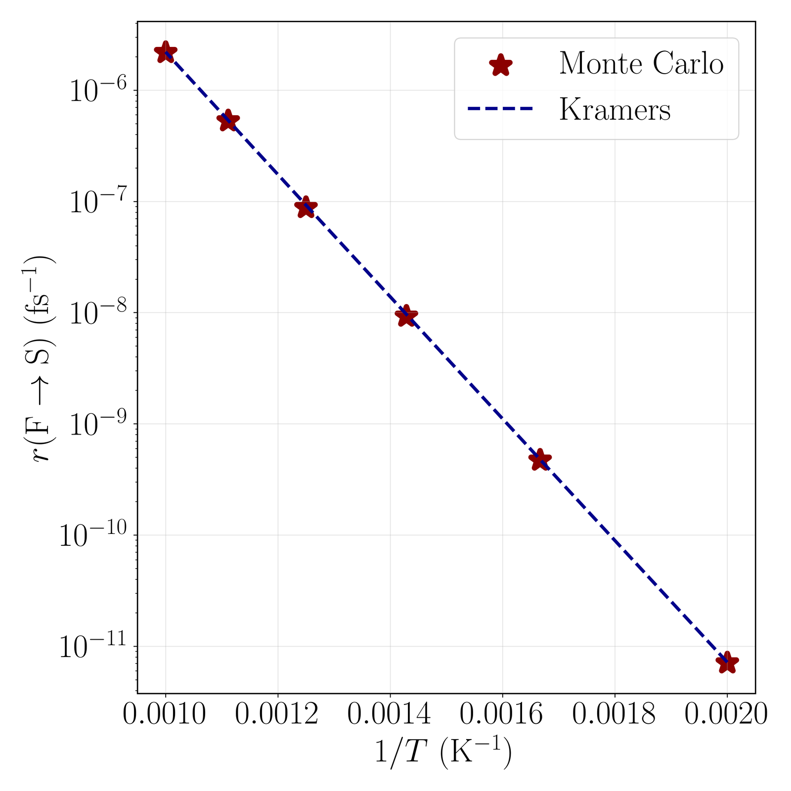
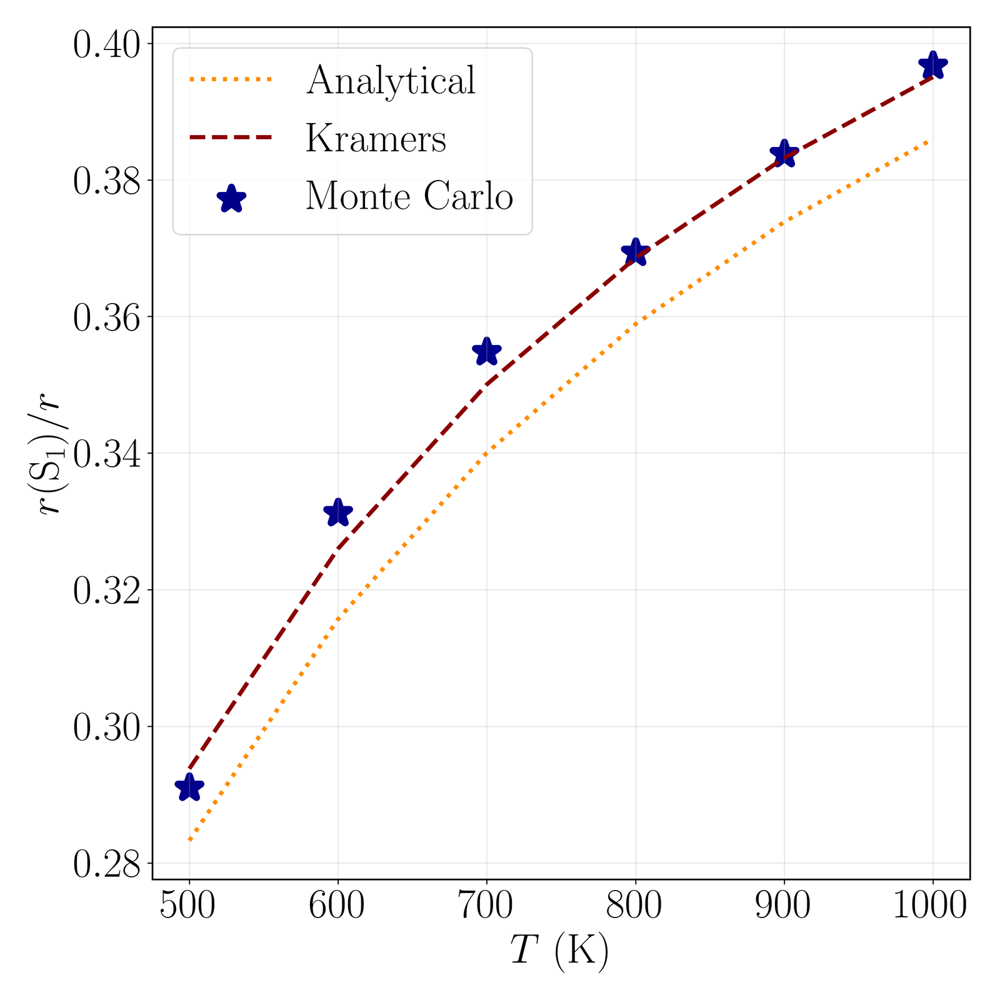

Overview
Atomistic simulations stay trapped in metastable states, yet rare transitions between them control long-term evolution. This work speeds up lattice kinetic Monte Carlo with a learned bias potential and reweights each sampled path to undo it. On a 14‑dimensional model landscape at 500 K, the reweighted rate, (6.7459 ± 0.1429) × 10−12 fs−1 in model units, is close to the exact 6.9191 × 10−12 fs−1 of the underlying two-dimensional (2‑D) system; without reweighting, it is a factor of three too low.
The ideal bias follows from the committor, the probability of reaching the product before returning to the start. But finding it exactly is at least as hard as the original rare-event problem, it can underflow near the starting basin at low temperature, and even small errors in it inflate the estimator's variance drastically.
- Failure and success states. Auxiliary states F and S, fed from small regions around the start and product, make the formulation robust to grid refinement.
- Unbiased reweighting. Path weights keep the success-probability estimate unbiased for any bias potential; an imperfect network costs variance, not bias.
- Rates without a biased clock. When successes are rare, the rate is about the success probability over the mean failure duration, which unbiased runs measure.
- Learned bias, bounded weights. A neural network learns the bias potential, which stays manageable where the committor is tiny; branching keeps path weights bounded.
Problem Setup
The system lives on a regular grid ${\Omega}$ of microstates ${i}$, each with an energy ${E(i)}$. It jumps only between nearest neighbors, from ${i}$ to ${j}$ at rate
where ${k_{\rm B}T}$ is the thermal energy and the frequency prefactor is ${\nu_0 = \mu k_{\rm B}T/(\Delta x)^2}$ in 2‑D, for mobility ${\mu}$ and grid spacing ${\Delta x}$. The benchmark landscape has two deep basins, around minima A and B, joined through saddle points S1 and S2 with energies 1.02 and 0.98 eV (Figure 1). At low temperature, a walker near A lingers long before a rare transition to B.

Method
Biasing the Jumps with an Importance Function
Defining failure and success by the single grid points A and B causes trouble under grid refinement: the committor develops ever sharper gradients around them, like a boundary condition imposed at a single point of a partial differential equation. Instead, states in small regions around A and B, fixed in size under refinement, may jump into auxiliary failure and success states F and S; each path runs from F back to F or on to S.
As in earlier rare-event importance sampling (Cai et al., 2002; de Koning et al., 2005), an importance function ${I(i) > 0}$ reweights ${\tilde K(i \to j)}$, the probability that this extended chain's next jump from ${i}$ goes to ${j}$:
The first line holds for ${j \neq {\rm F}}$: jumps into F are forbidden, the jump out of F is left unbiased, and ${\tilde n'(i)}$ keeps the probabilities normalized. All ${\tilde n'(i)}$ equal 1 exactly when ${I}$ is the committor ${p_{\rm S}(i)}$, the probability of reaching S before F (with ${I({\rm S}) = 1}$). Every success path from a given first state is then enhanced by the same known factor, so the mechanism is preserved. This reweighting is equivalent to adding a bias potential to the energy:
Path Weights, Rates and Branching
In practice ${I}$ only approximates the committor, so each success path ${\Gamma}$, from F through ${i_1, \dots, i_n}$ to S, carries a weight ${W}$, and ${p_{\rm S}({\rm F})}$, the probability that a path leaving F reaches S before returning to F, becomes an average over biased paths:
Here ${R(\Gamma)}$ is 1 for a success and 0 otherwise, ${i_1}$ is the first state after F, and ${\langle \cdot \rangle'}$ averages over paths sampled with ${\tilde K'}$. This holds for any positive ${I}$, so the estimate is unbiased in expectation: a poor ${I}$ costs variance, not bias.
A first passage from F to S is many failures followed by one success, so on average it lasts about ${\langle t_{\rm FF} \rangle / p_{\rm S}({\rm F})}$, with ${\langle t_{\rm FF} \rangle}$ the mean duration of a failure (time in F excluded). The F-to-S rate, which closely tracks the rate between the basins, is then
an approximation valid when failures vastly outnumber successes. Unbiased runs give ${\langle t_{\rm FF} \rangle}$; biased runs supply only the dimensionless ${p_{\rm S}({\rm F})}$, so time is never measured under bias.
When weights spread widely, a branching random walk keeps them inside ${[W_{\min}, W_{\max}]}$. Each step multiplies a walker's weight by ${\tilde n'}$. Below ${W_{\min}}$ the walker is removed with probability ${1 - W}$, or else restarts at weight 1; above ${W_{\max}}$ it splits into unit-weight copies whose number, rounded up or down at random, averages ${W}$ (stochastic rounding, as in Monte Carlo rendering and particle transport). Walkers reaching S score ${W\, I(i_1)}$, keeping the estimate unbiased.
Learning the Bias Potential
Building on earlier machine-learning work on committors and rates, a neural network with parameters ${\theta}$ represents the bias potential ${E_{\rm b}(i;\theta)}$ rather than ${I}$, keeping its values manageable even where ${I}$ risks underflow.
Training minimizes the sum of ${[\ln \tilde n'(i)]^2}$ over states the current biased walks visit, driving every ${\tilde n'}$ toward 1 (a loss analogous to one by Mitchell and Rotskoff, 2024), and alternates sampling with training. Simulated annealing, which the authors found helps avoid numerical instabilities and aids convergence, lowers the training temperature stepwise to the target.
Results
Reweighted Paths Recover the Exact Success Probability
On the 2‑D landscape (500 K, 0.1 nm grid), all states can be enumerated, so the exact committor and bias are known. A network with two hidden layers of 30 tanh units, annealed from 5800 K to 500 K in 8 stages, matches the exact bias substantially better after 100 epochs per temperature than after 30 (Figure 2).
Mean path weights differ from 1, so neither network is optimal. Yet the reweighted success probabilities for 30 and 100 epochs, (2.1921 ± 0.0082) × 10−13 and (2.1937 ± 0.0065) × 10−13, sit close to the exact 2.1899 × 10−13.



Branching Cuts the Cost About 8‑Fold at Similar Variance
To test robustness, a network trained on the coarse 0.1 nm grid biases, without retraining, a grid refined to 0.025 nm, where the exact success probability is 1.4120 × 10−14. Without branching, most successful paths carry near-zero weights and contribute almost nothing (Figure 3a); the estimate from 7,967,789 Monte Carlo steps is (1.5198 ± 0.0627) × 10−14. Branching holds the weights in [0.5, 1.2] (Figure 3b), and 958,928 steps, approximately 8‑fold fewer, give (1.5210 ± 0.0690) × 10−14 at similar variance. Both lie above the exact value.


Rates Match Kramers Theory, Channel Split Included
With branching and a coarse-grid network, rates at 500 K converge under grid refinement toward 0.025 nm, in good agreement with the exact rate. On that grid, rates from 500 to 1000 K follow Kramers' rate theory for overdamped dynamics (Figure 4a).
The paths also resolve the mechanism: the fraction of transitions through S1 is 0.2910 at 500 K and 0.3967 at 1000 K, against Kramers predictions of 0.2938 and 0.3951. The saddle energies alone, with equal prefactors, underpredict it at every temperature (Figure 4b), which the paper traces to prefactors set by local curvature at the saddles.


In 14‑D, Reweighting Recovers the Rate; Skipping It Does Not
The 14‑D landscape adds independent harmonic terms in 12 extra coordinates to the 2‑D potential, with transitions defined through the first two, so the exact 2‑D rate is the reference; its 0.1 nm grid is far too large to enumerate. The bias, a trainable Gaussian plus a multilayer perceptron, was trained directly at 500 K for 10,000 epochs. With branching, the reweighted rate agrees closely with the exact value; using the learned committor without reweighting gives a rate three times too low (Table 1).
| Method | rFS (10−12 fs−1) | pS(F) (10−11) | ⟨tFF⟩ (fs) |
|---|---|---|---|
| Reweighted (14‑D) | 6.7459 ± 0.1429 | 3.3598 ± 0.0322 | 4.9805 ± 0.0564 |
| No reweighting (14‑D) | 2.0156 | — | — |
| Exact (2‑D system) | 6.9191 | — | — |
Table 1. The 14‑D landscape at 500 K. “No reweighting” treats the learned committor as exact, ${p_{\rm S}({\rm F}) = \sum_j \tilde K({\rm F} \to j)\, I(j)}$. Rates are in model units (nm, fs); the linked arXiv v1 PDF omits the units.
Takeaway
Outlook
All tests use analytic model landscapes; the paper names atomistic systems as the next step, for long-term processes such as defect evolution in crystals and protein dynamics in solution. The companion paper, Accelerated Langevin Dynamics, carries the ideas to continuous-space dynamics and atomistic systems (see Accelerated Atomistic Simulations); the Claude hackathon project on agent-guided protein kinetics builds on both.